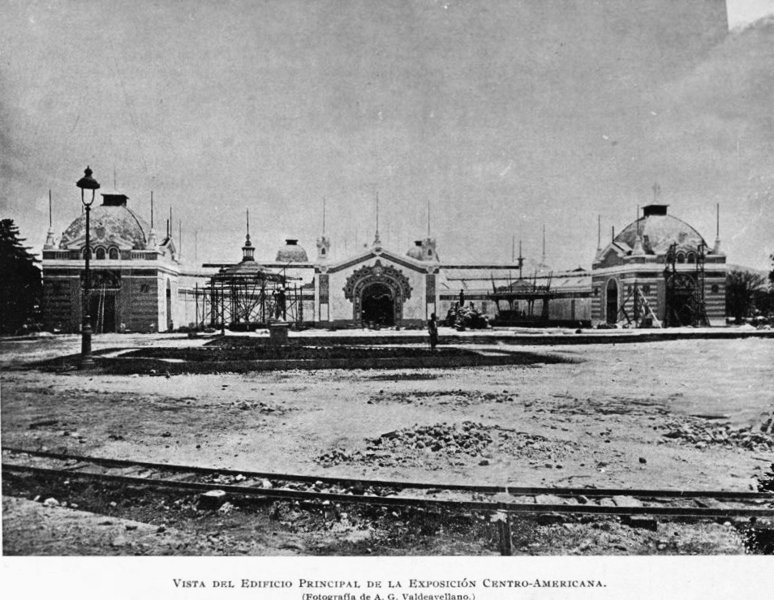
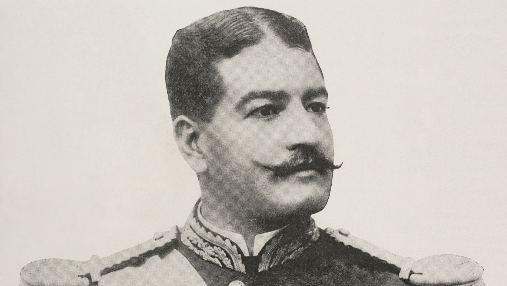
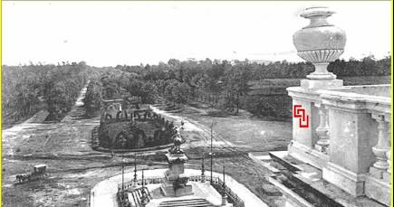
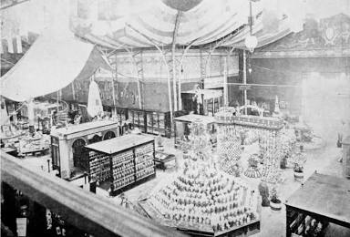
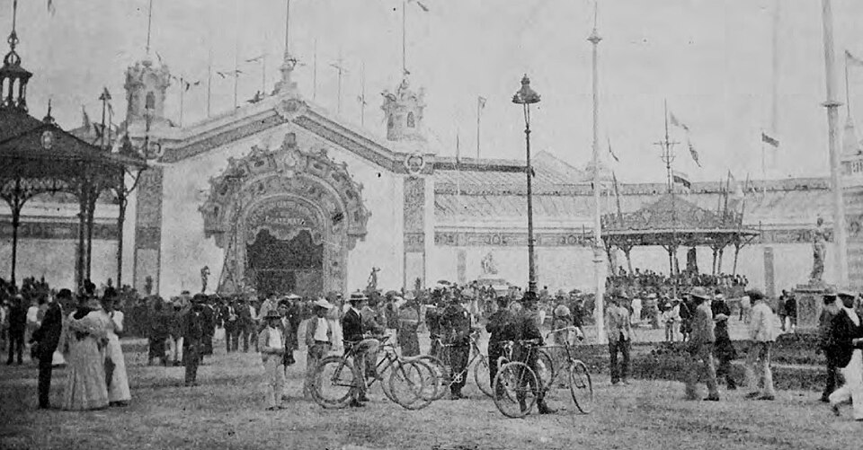

Modernización, infraestructura, proyección internacional
y el costo político-económico del proyecto.
HistoriaGuatemala1897
Resumen
La Exposición Centroamericana (1897) fue pensada como una vitrina de progreso para atraer inversión, impulsar obras públicas y
posicionar a Guatemala en el circuito de las ferias internacionales. El proyecto impulsó transformación urbana, infraestructura y
nuevas tecnologías para la época (iluminación, trazado urbano, promoción cultural).
Al mismo tiempo, el alto gasto estatal y la dependencia de ingresos externos (como el café) generaron un choque financiero. La crisis
derivó en tensión política, levantamientos y, a mediano plazo, un reordenamiento del poder. Por eso, el evento se entiende como
un impulso modernizador con repercusiones severas.
Impacto: aportes y repercusiones
Impacto positivo
Transformación urbana: expansión hacia el sur y consolidación de ejes urbanos (ej. el boulevard como símbolo de modernidad).
Infraestructura y servicios: mejoras y aceleración de obras vinculadas a movilidad, agua y alumbrado para el evento.
Proyección internacional: intento de atraer inversión y posicionar a Guatemala como “nodo” logístico (ideal del ferrocarril).
Impulso cultural: exhibición de industria, arte y producción local; creación de imaginario nacional “progresista”.
Repercusiones
Desbalance fiscal: gasto alto frente a ingresos frágiles; incremento de presión económica.
Expectativas vs. realidad: sin ferrocarril concluido, la inversión extranjera no respondió como se esperaba.
Inestabilidad: crisis financiera + tensión política → conflictos y cambios de poder posteriores.
Contraste social: modernización visible en la capital, pero con costos sociales y desigualdad en el fondo.
Línea de tiempo
1851 — Gran Exposición (Londres)
Contexto
Referente temprano del formato de feria industrial internacional que inspira eventos posteriores.
1889 — Exposición Universal (París)
Contexto
Consolidación del modelo: arquitectura emblemática y discurso de modernidad como propaganda estatal.
1896 — Preparación urbana y obras
Urbanismo
Aceleración de obras, trazado y embellecimiento urbano para sostener la narrativa de progreso.
1897 — Exposición Centroamericana (Guatemala)
Exposición
Vitrina de modernización: industria, cultura y estrategia para atraer inversión vinculada al ferrocarril.
1897 — Crisis financiera y presión fiscal
Economía
Gasto elevado + ingresos frágiles (café) producen desbalance, tensión social y pérdida de confianza.
1898 — Repercusiones políticas
Economía
La crisis acelera conflictos y reconfigura el poder, marcando un giro político para el país.
Galería

Edificio principal de la Exposición Centroamericana (1897).
Fuente: Wikipedia

General José María Reina Barrios.
Fuente: PHAS / PHAS/Universal Images Group via Getty Images

Boulevard 30 de Junio, eje urbano del proyecto..
Fuente: Historia de la Ciudad de Guatemala / Historia de la Ciudad de Guatemala: Boulevard del Treinta de Junio ...

Interior de un pabellón de exhibición..
Fuente: Wikimedia Commons - Wikimedia.org / File:Exposicion Centroamericana 1897 Pabellon Guatemala.jpeg ...

catalogo Exposición Centroamericana 1897 Guatemala.
Fuente: commons.wikimedia.org
El ferrocarril como objetivo geopolítico: pieza clave para conectar costas y atraer capital extranjero.
Fuente: Wikipedia / Ferrocarril del Norte de Guatemala - Wikipedia